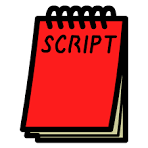
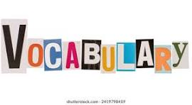

Your journey to mastering Japanese starts here!
Practice Japanese with an AI tutor powered by Gemini.
Launch Ai Tutor
Learn all three Japanese scripts: Hiragana, Katakana, and Kanji with interactive lessons and practice exercises.

Build your vocabulary with themed word lists, flashcards, and real-life usage examples.
Understand Japanese grammar rules with clear explanations, examples, and practice sheets.